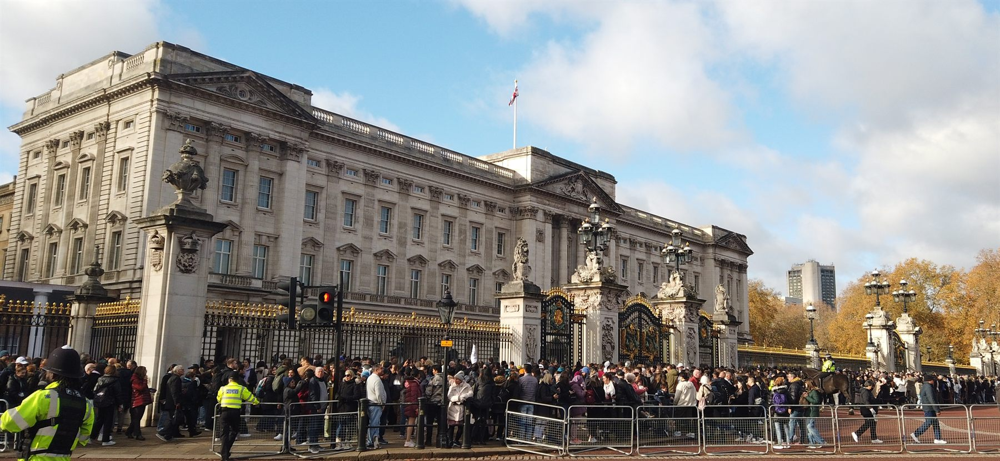
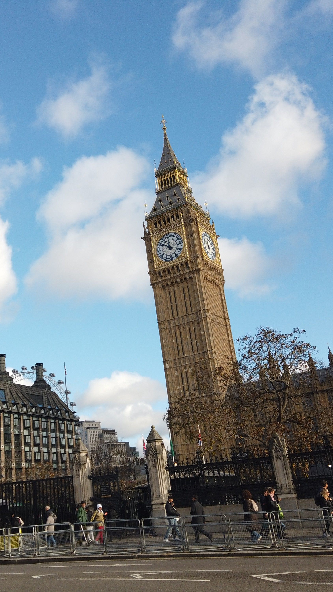
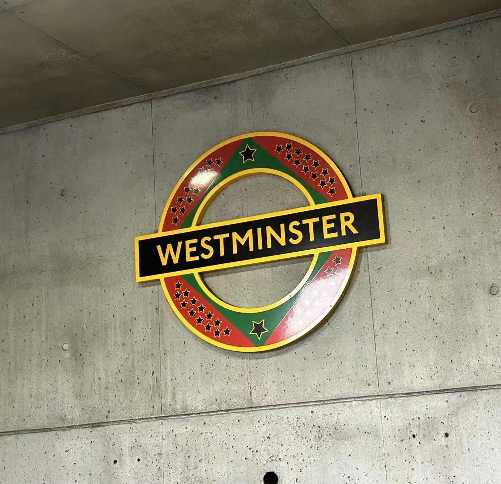
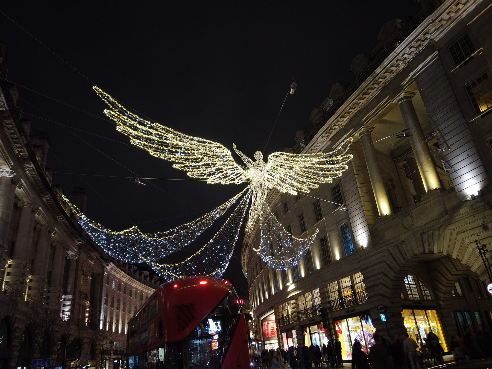
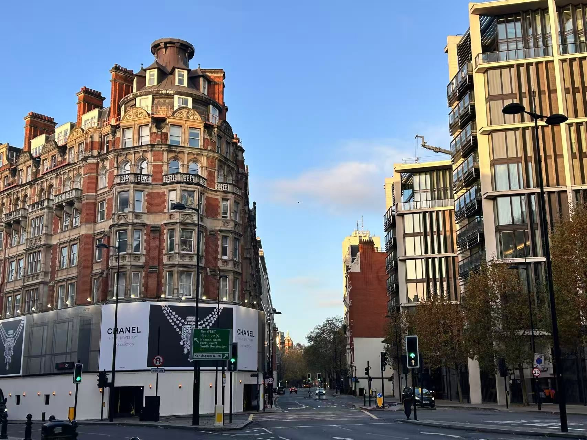
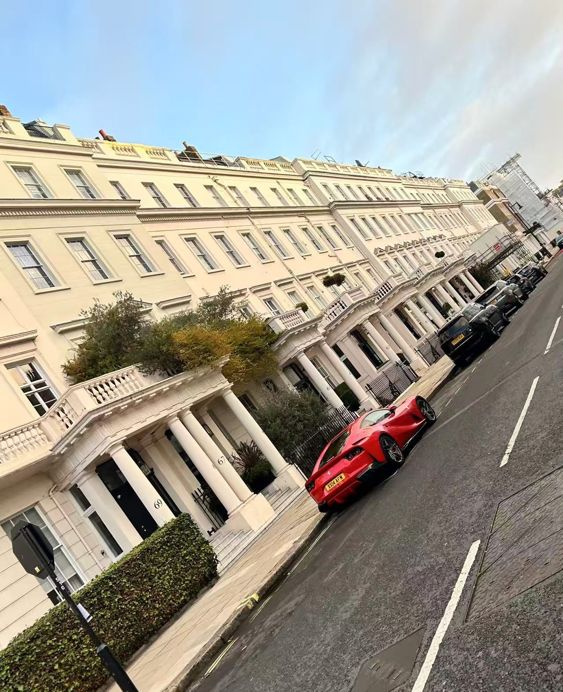

London Blue 路 Opening Movement
Empire in Public View
濡傛灉杩欒稛鍛ㄦ湯浼︽暒鏈変竴涓渶閫傚悎寮€鍦虹殑鐢婚潰锛岄偅涓€瀹氭槸鍥藉浠紡銆傜櫧閲戞眽瀹€佸ぇ鏈挓銆佸箍鍦轰笌鏍呮爮銆佸埗鏈嶄笌姝ヤ紣锛屾妸杩欏骇鍩庡競鏈€鎿呴暱鐨勪笢瑗夸竴涓嬪瓙鎽嗗湪鐪煎墠锛氱З搴忋€佽窛绂汇€佽繛缁€э紝浠ュ強涓€绉嶆涓嶆帺楗扮殑鍏叡鏉冨▉銆傚畠骞朵笉璇曞浘璁ㄥソ锛岃€屾槸闈炲父娓呮鑷繁璇ュ浣曡瑙傜湅銆?
Buckingham Palace
Big Ben
#Ceremony




